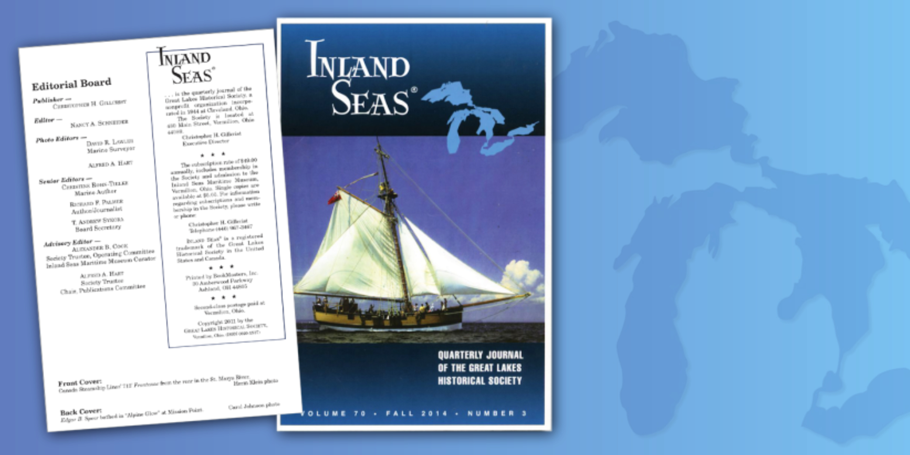
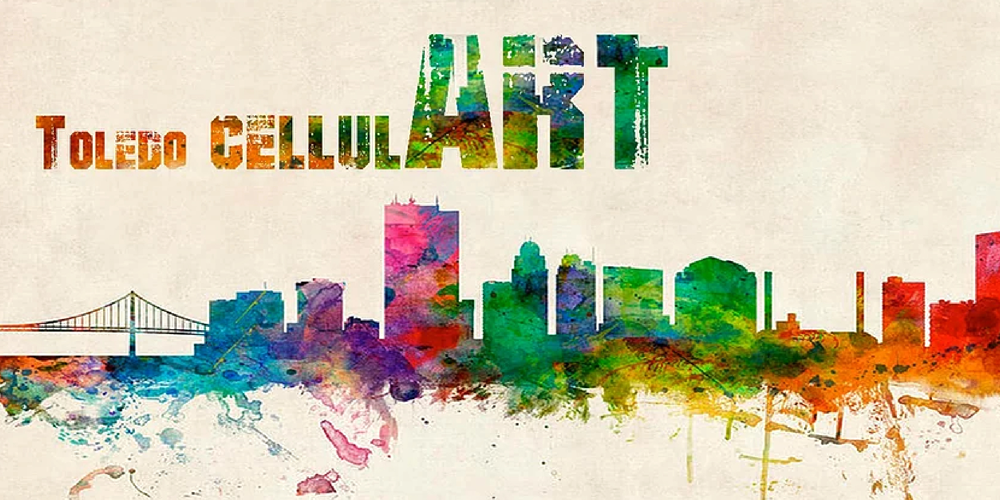
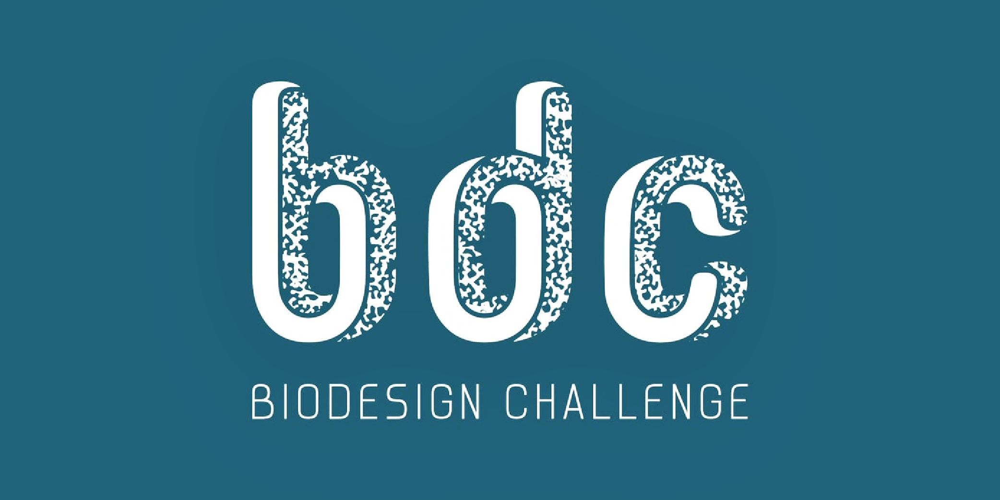

ABOUT THE ARTIST
About Domenic:
Domenic Pennetta is a scientific illustrator originally based in Northwest Ohio. Through art, Domenic explores many scientific disciplines such as biology and invertebrate zoology, ecology, and paleontology. He works traditionally and digitally to create illustrations for clients worldwide, including researchers and professors, publishers, businesses, and nonprofits. Domenic holds a bachelor's certificate in Fine Art and a minor in Biology from the University of Toledo, Ohio. His work aims to promote enthusiasm for scientific topics and research among the general public. Domenic has also worked for the National Museum of the Great Lakes in Toledo, Ohio as their Communications Coordinator—influencing him to explore the wildlife of the Great Lakes in his most recent work.
Additionally, he creates speculative biology art depicting exobiological forms of life using fundamental scientific concepts. In 2021, Domenic founded a biannual speculative biology magazine called "Astrovitae" where he collaborates with other creators to curate and showcase their projects online. The magazine has proved beneficial for many artists at the beginning of their careers, offering them an opportunity to learn important writing skills and have their work published for the first time.
Domenic is always looking for commissions and collaborative opportunities. If you want to work with Domenic, feel free to reach out via email!
ResumeCREATIVE PROFICIENCIES
DIGITAL ILLUSTRATION: Adobe Creative Suite (Photoshop, InDesign, Illustrator, Premiere Pro), Affinity Suite (Photo, Designer, Publisher), and Krita
TRADITIONAL ILLUSTRATION: Charcoal, Graphite, Ink, Oil, and Watercolor
TECHNICAL: HTML, CSS, Interactive PDFs, PowerPoint, Google Slides, and Blender 3D
SELECT COLLABORATIONS
Editorial & Scientific Illustration
Inland Seas Journal
Inland Seas is an award-winning quarterly journal by the Great Lakes Historical Society sharing stories about the influence of the Great Lakes. Domenic worked on the layout of the journal between 2021–2023, and still contributes articles with his illustrations depicting native and invasive species found in the Great Lakes region.
Scientific Illustration - Cytological
CellulArt Toledo
CellulArt is a conference that brings together the art and scientific communities of Northwestern Ohio, Southern Michigan, and Northeastern Indiana. The yearly event promotes collaboration, interaction, and discussion between researchers working with the cytoskeleton and artists, and appreciating the link between art and science.
Scientific Communication
Biodesign Challenge
The Biodesign Challenge is an education program and competition that shapes students into biodesigners. They partner university students with scientists, artists, and designers to envision, create, and critique transformational applications in the fields of biotechnology and ecology.